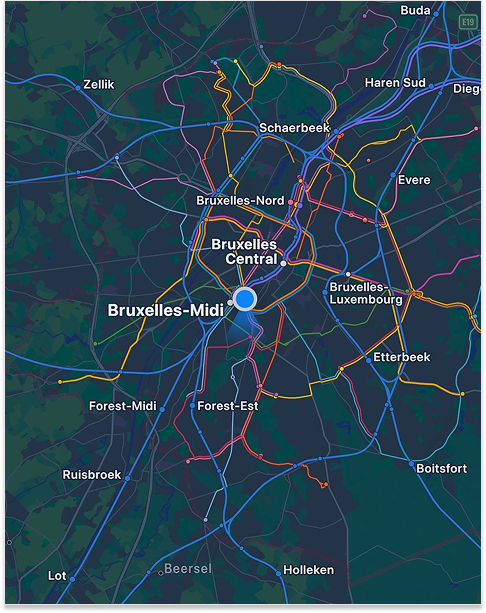
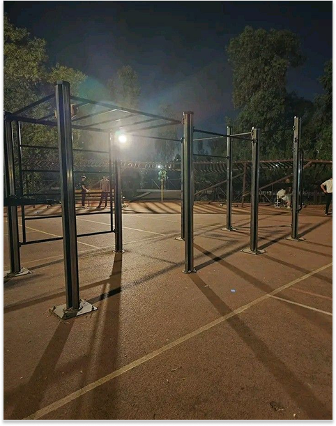
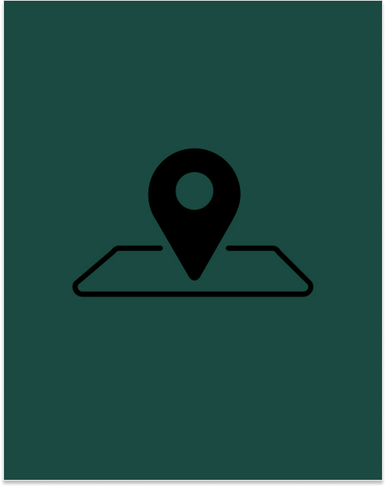
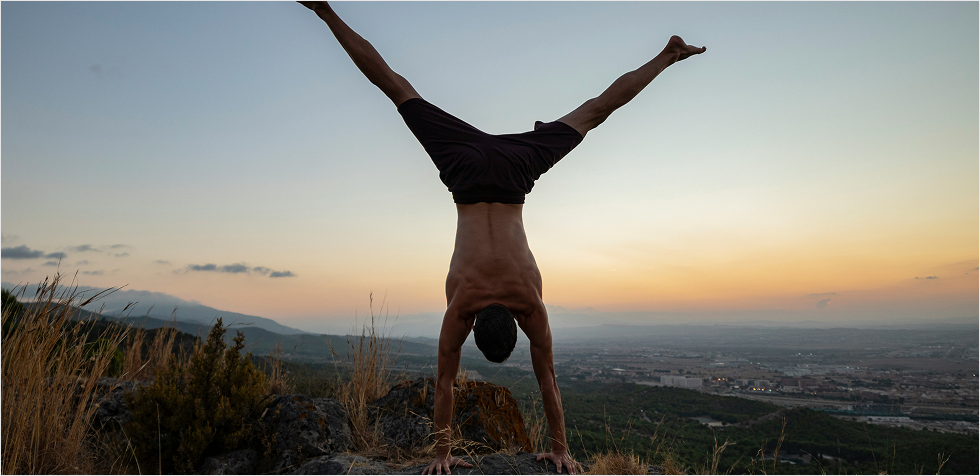

Find calisthenics parks near you!

See parks near you

Check all the parks

Add your favorite park

What is calisthenics?
Calisthenics is a type of training where you use your own body weight instead of machines or heavy weights. It helps you build strength, control, mobility, and endurance with exercises like push-ups, pull-ups, dips, squats, and planks. You can train almost anywhere: at home, outside in a park, or in a gym. Most calisthenics parks have simple equipment like pull-up bars and parallel bars, but you don’t need much to start. What makes calisthenics different is the focus on technique and body control. You start with basic movements and slowly progress to harder skills like muscle-ups, handstands, front levers, and planches. It’s for beginners and advanced athletes, because you can always choose an easier or harder variation.